AWS DMS를 활용하여 Oracle에서 MySQL로 DB 마이그레이션 하기
시작하기 전에
현대차, 카카오, KT, 대한항공 등 에서 촉발된 탈(脫) Oracle 프로젝트(escape from oracle)는 오픈소스 DB, 클라우드 DB 의 안정성이 높아지면서 국내 뿐만 아니라 해외에서 먼저 트렌드로 자리 잡았으나, 그럼에도 불구하고 현존 RDBMS 중 성능 최강인 (가격도 최강) Oracle 을 100% 대체할 수 있는 RDBMS는 안타깝게도 아직까지는 없다고 생각합니다.
(2020년말기준) 그렇기 때문에 Oracle에서 벗어나려면 Oracle에서만 지원하는 기능을 어떻게 타겟DB에서 대체 또는 구현할지 에 대한 깊은 고민이 필요합니다.
이번 C고객사에서는 시범적으로 기존 온프레미스 Oracle 의 레플리카를 퍼블릭 클라우드 환경으로 마이그레이션 하여 향후에 있을 감사 등 에 대응할 수 있길 원하셨습니다. 미션 크리티컬한 서비스 DB 가 아니여서 다운타임에 대한 고려가 불필요했습니다. 빗발치는 OLTP 가 발생하지 않는 DB의 마이그레이션이라… 꿀냄새가 진동하네요.
Close your eyes and hope for the best. AWS에서 제공하는 DB 이관 도구는 꽤나 강력합니다.
사전 검토
-
소스 DB 체크
- 버전: Oracle 11g Enterprise (Release 11.2.0.4.0) on TNS for Linux - 64bit
- 총용량(1TiB 가량)
- 오브젝트 현황 파악
-
타겟 DB 체크
- 버전: MySQL 8.0.21 on Amazon Linux 2 - 64bit
- EC2 인스턴스 유형: r5.4xlarge (vCPUs: 16, 메모리: 128GiB)
-
AWS 콘솔에서 작업자 접속용 EC2 인스턴스 생성 (이하 작업콘솔)
-
작업콘솔 에서 소스, 타겟 접속 가능하도록 가상 네트워크 구성 및 방화벽 설정
-
작업 절차 거버넌스
- Schema Conversion Tool (이하 SCT) 로 스키마 이관
- Database Migration Service (이하 DMS) 로 데이터 이관
- 미싱 스키마, 미싱 데이터 수동 점검
-
Procedure, fucntion, sequence 는 마이그레이션 대상에서 제외
-
별도의 SSL 구성은 하지 않음
마이그레이션 아키텍쳐
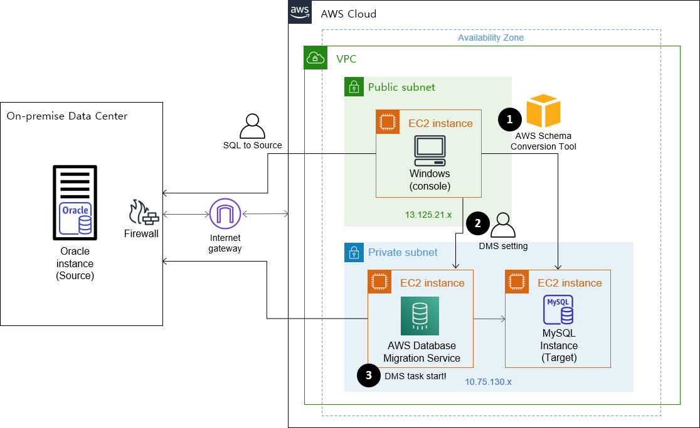
- 작업콘솔의 SCT에서 소스의 스키마를 DDL 형태로 로드하여 타겟에 적용합니다.
- AWS 콘솔에서 DMS 내에 필요한 리소스를 셋팅 합니다. (복제 인스턴스, 소스/타겟 엔드포인트 생성)
- DMS 내에 여러 마이그레이션 태스크를 소스 스키마 단위로 생성하고 일괄 실행합니다.
- 소스, 타겟에 직접 SQL을 실행하여 전체 오브젝트 현황을 비교하고 검증합니다.
1. 작업 콘솔 셋팅
자, 이제 사전 검토했고 아키텍쳐 파악했으니, 실제로 시작해봅시다.
- AWS 콘솔에서 퍼블릭 IPv4 와 RDP port 를 확인하여 작업콘솔에 원격 접속 합니다.
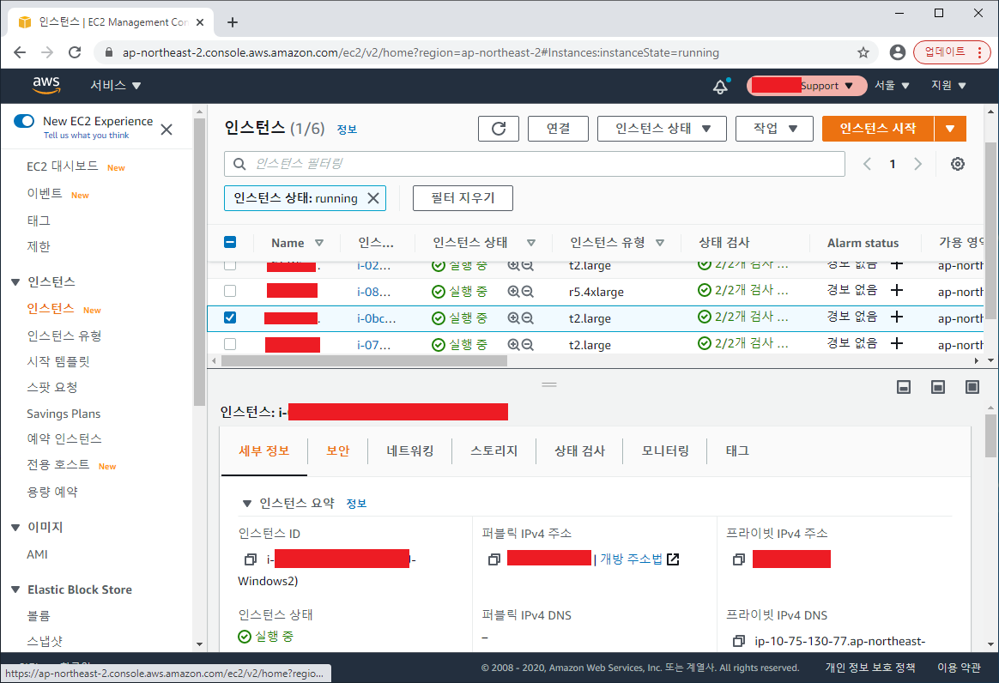
- 작업콘솔에서 소스 검증을 위하여 SQL Developer 설치 후 소스DB 접속 테스트를 합니다.
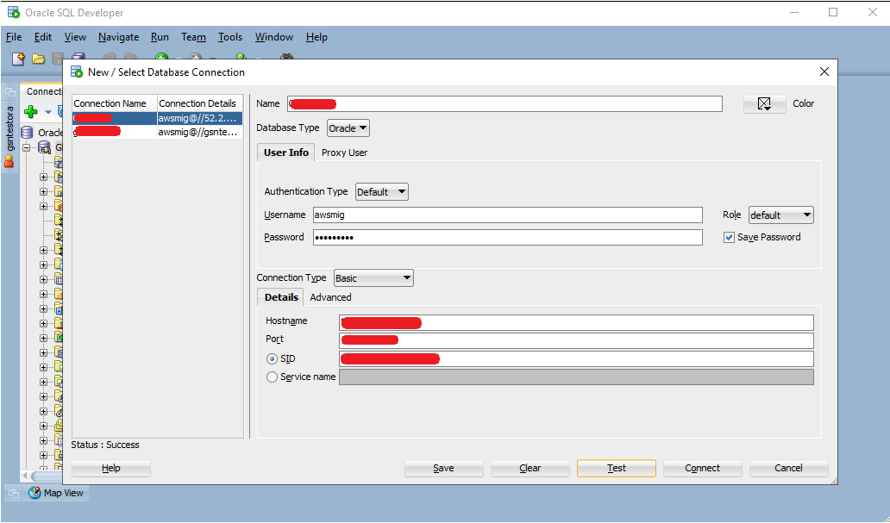
- 작업콘솔에서 타겟 검증을 위하여 WorkBench 설치 후 타겟DB 접속 테스트를 합니다.
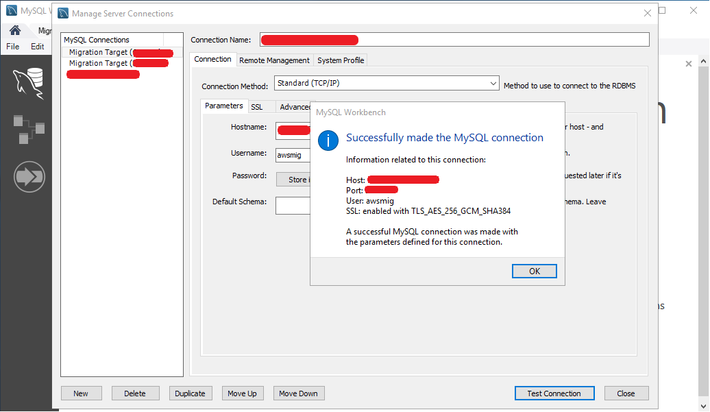
- 작업콘솔에서 스키마 이관을 위하여 SCT 설치 후 소스, 타겟 접속 테스트를 합니다. SCT > New Project wizard IU 입니다. Source engine 의 기본값이 Oracle인 것이 흥미롭습니다.
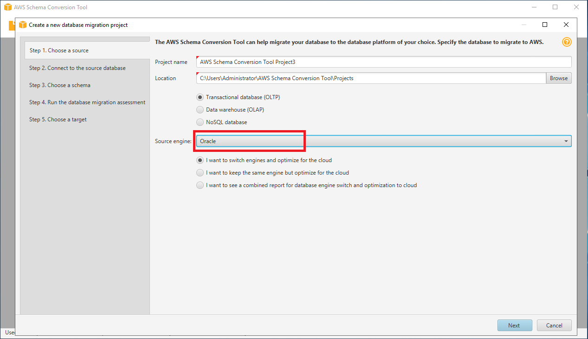
2. 타겟 DB 셋팅
2.1. Buffer pool
DMS가 타겟DB에 값을 쓸 때 버퍼캐쉬 크기가 처리 성능을 크게 좌우합니다. 디폴트값(128MB)에서 일시적으로 서버 메모리 한도 내에서 최대한으로 설정하도록 권장 드립니다. 금번 프로젝트의 경우 64GiB 로 설정하여 진행했습니다.
|
|
※ Innodb buffer pool size가 쓰기 성능에 얼만큼 영향이 큰지 테스트한 블로그 링크 참고 바랍니다. 출처: innodb mysql/mariadb insert 속도 높이기↗
2.2. Timezone
타겟 EC2 에 MySQL 바이너리 설치한 초기 상태에서는 timezone 을 소스와 동일한 timezone 으로 설정해주어야 합니다. 먼저 소스 DB의 timezone을 확인합니다.
|
|
DBTIMEZONE SESSIONTIMEZONE +09:00 UTC
소스DB의 timezone 은 UTC + 09:00 인 Korea Standard Time(KST) 인 것을 확인 했습니다. 타겟DB에 Asia/Seoul timezone이 존재하는지 아래 SQL문을 실행해봅니다.
|
|
Asia/Seoul timezone이 존재하지 않는다면 타겟 EC2 에 다음과 같은 명령을 실행합니다.
MySQL 8.0 참조 매뉴얼 / ... / mysql_tzinfo_to_sql — 시간대 테이블로드↗
1mysql_tzinfo_to_sql /usr/share/zoneinfo | mysql -u root -p mysql
타겟DB 설치경로 안에 /etc/my.cnf 또는 /etc/my.cnf.d/ 경로 안에 my.cnf 파일 또는 my.ini 파일을 열어 안에 다음 내용을 추가해줍니다.
|
|
|
|
@@TIME_ZONE @@system_time_zone @@GLOBAL.TIME_ZONE @@SESSION.TIME_ZONE +09:00 KST +09:00 +09:00
정상적으로 적용되어 있는 것 확인 완료요!
※ MySQL on RDS 는 AWS 콘솔에서 Parameter Group 생성 및 적용하여 비교적 간단하게 변경 가능합니다.
2.3. Charset
소스DB의 charset을 확인하여 타겟DB에 적용해주도록 합니다. 데이터를 이관하기 전에 신중히 결정해야할 사항이며 이관 완료 이후에 charset, collation 변경 작업은 지옥문을 여는 경험이 될 수 있습니다. 일단 먼저 소스 DB의 charset을 확인합니다.
|
|
result[0]
NAME VALUE$ NLS_NCHAR_CHARACTERSET AL16UTF16 NLS_LANGUAGE AMERICAN NLS_DATE_LANGUAGE AMERICAN NLS_CHARACTERSET KO16KSC5601
result[1]
PARAMETER VALUE NLS_CHARACTERSET KO16KSC5601
NLS_CHARACTERSET 이 KO16KSC5601에 대응되는 charset 은 EUCKR, 또는 커버리지가 더 넓은 UTF8을 생각해볼 수 있습니다. charset EUCKR 에 대한 collation 은 EUCKR_KOREAN_CI, EUCKR_BIN 이 있는데 대소문자가 구별되는 이유로 EUCKR_BIN 이 적합합니다.
EUCKR_BIN: 한국어, 바이너리, 대소문자 구분함EUCKR_KOREAN_CI: 한국어, 대소문자 구분 안함
Charset EUCKR, collation EUCKR_BIN을 결정했으니 이제 서버에 아래 명령을 실행해줍니다.
1$ vi /etc/mysql/my.cnf
파일 내용의 마지막에 다음 부분을 덧붙여준 후 :wq 로 저장 후 닫아줍니다. 그리고 서비스를 재시작하면 적용됩니다.
|
|
Charset, collation 도 설정 완료했습니다. 😅
3. SCT로 스키마 이관
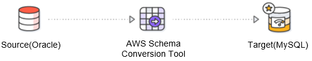
소스에서 SCT로 이관할 스키마를 선택하고 Next를 클릭합니다. 선택한 스키마 내에 전체 오브젝트 개수에 비례하여 시간이 오래 걸릴 수 있습니다.
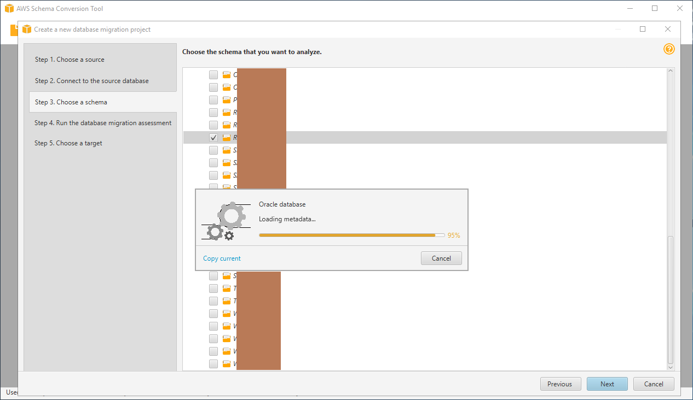
소스 스키마에 대한 로드 작업이 끝나면 여러가지 타겟의 종류 별로 몇개가 이관 가능한지, 몇개는 수동 조치를 취해야 하는지 전체 조사한 Database migration assessment report를 보여줍니다. pdf로도 다운로드 가능하며, 전체적으로 한번 훑어보고 Next를 클릭합니다.
(Procedure, funcion, sequence 는 migrating 대상이 아니므로 부담없이 Next클릭)
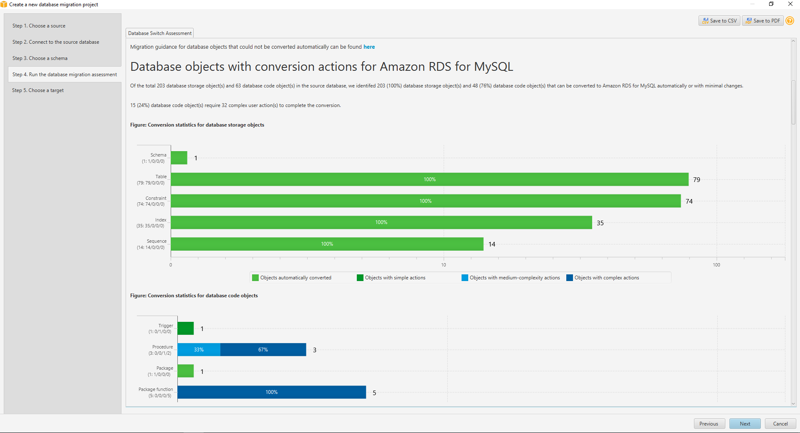
SCT 관점에서 타겟의 엔진이 MySQL 인 것이 의미가 있고, RDS 또는 EC2 중 어떤 것인지는 중요하지 않기 때문에 Amazon RDS for MySQL을 선택하고 타겟의 접속정보 입력 후 Test connection, 접속 성공하면 Next를 클릭합니다.
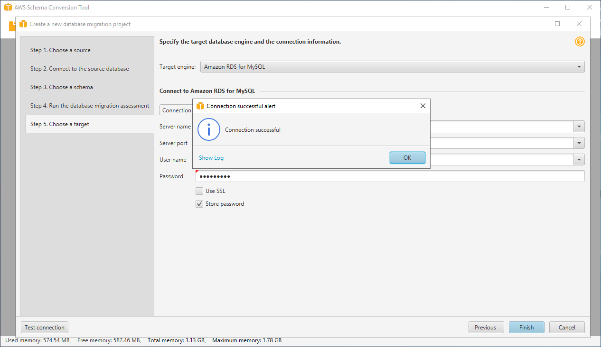
소스(좌측)에서 DDL을 추출할 스키마와 개체유형을 선택하고 Convert schema를 클릭합니다. 타겟(우측)에서 선택 체크된 항목들에 대해서 DDL을 적용하려면 Apply to database를 클릭하면 타겟 DB에 실제로 DDL이 적용됩니다.
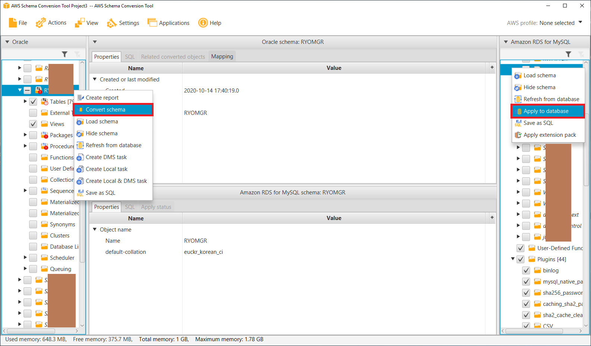
타겟 DB에 아래 SQL을 실행해서 정상적으로 스키마가 적용되어 있는지 확인합니다.
|
|
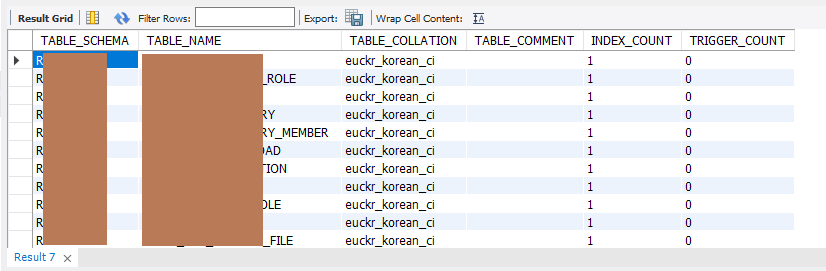
※ 타겟DB가 MySQL 인 경우 테이블과 컬럼의 comment가 SCT로 이관되지 않음을 확인했습니다. 금번 프로젝트 진행하면서 AWS 케이스 오픈을 통하여 정식 요청하였으며, 추후 픽스될 것으로 보입니다.
SCT에 대한 상세한 가이드는 AWS Schema Conversion Tool User Guide↗를 참고 바랍니다.
만약 SCT로 trigger 까지 이관시켰다면 DMS 태스크 실행 시 trigger로 인해 오류가 떨어지고 태스크가 멈출 수 있으므로 trigger 를 백업받아놓고 모두 제거하는 것을 추천드립니다.
|
|
다시 한번 강조하지만 DMS로 데이터를 들이부은 이후에는 charset, collation 을 변경하는 데에 굉장히 긴 시간이 소요될 수 있습니다. 그래서 SCT 작업 끝나고 DMS 작업을 시작하기 이전에 아래 쿼리를 다시 실행해주면 세상 시원하겠습니다.
|
|
4. DMS로 데이터 이관
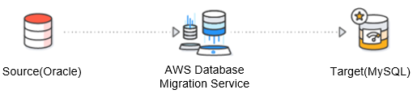
이제 본격적으로 DMS로 데이터를 넘겨볼껀데요. 그전에 복제 인스턴스, 엔드포인트, 마이그레이션 태스크를 생성해야 합니다.
먼저, 복제 인스턴스는 아래 사양으로 생성했습니다.
- 클래스: dms.c4.4xlarge
(처음에는 c4.large였다가 너무 느려 속 터져서 업그레이드) - vCPUs: 8
- 메모리: 30GiB
- 전용EBS 대역폭: 2,000Mbps
- 할당 스토리지: 1000GiB
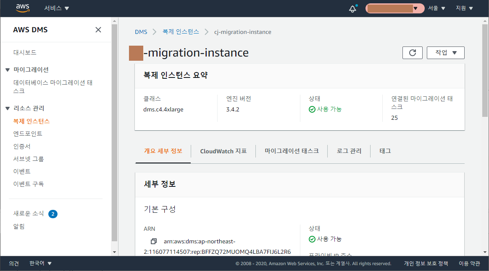
엔드포인트는 유형에 따라 소스 1개, 대상 2개로 생성했습니다. 소스DB, 타겟DB 의 접속정보를 각각 알맞게 넣어주고 테스트 실행을 해봅니다.
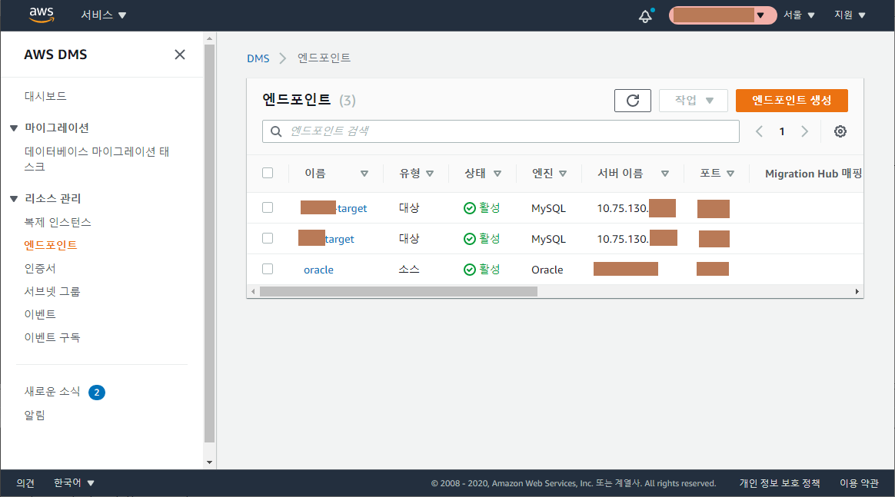
마이그레이션 태스크는 아래 캡처대로 순서대로 값을 입력합니다.
- 태스크 식별자: 식별할 수 있는 이름
- 복제 인스턴스: 복제 인스턴스 선택
- 소스 엔드포인트: 소스DB 엔드포인트 선택
- 대상 엔드포인트: 타겟DB 엔드포인트 선택
- 마이그레이션 유형:
기존 데이터 마이그레이션선택
(기존 데이터를 일회성으로 마이그레이션할 것이기 때문에) - 태스크 설정 편집모드:
마법사 - 대상 테이블 준비 모드: 아무 작업 안 함
※대상에서 테이블 삭제는 DDL(drop & create)을 실행하기 때문에 charset, collation, trigger 등이 원래대로 생성될 수 있음 - 복제에 LOB 열 포함:
전제 LOB 모드 - LOB 청크 크기: 64
- 검증 활성화: Y
- CloudWatch 로그 활성화: Y
※ 그외 CloudWatch 관련 설정들은 모두기본값 - 테이블 매핑 편집모드:
마법사 - 선택 규칙 >
새 선택 규칙 추가> 스키마 입력 > 테이블 이름 (필요에 따라 입력, % 는 전체 테이블) - 마이그레이션 전 평가: N
- 마이그레이션 태스크 시작 구성:
나중에 수동으로 - 태그: (필요한 경우에 입력, 많이 입력할수록 추후에 찾기 용이함)
태스크 생성클릭
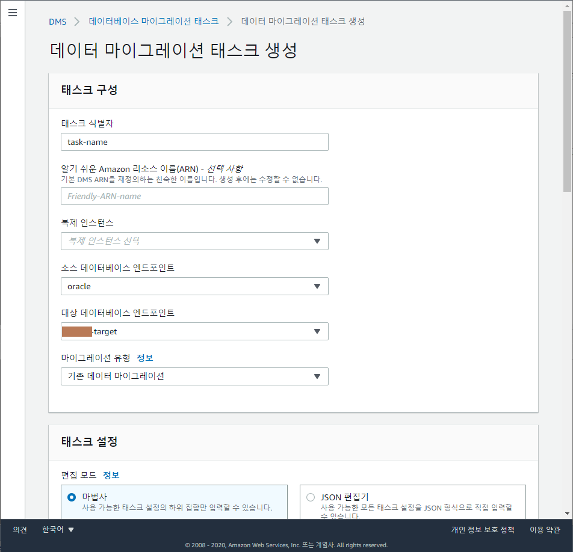
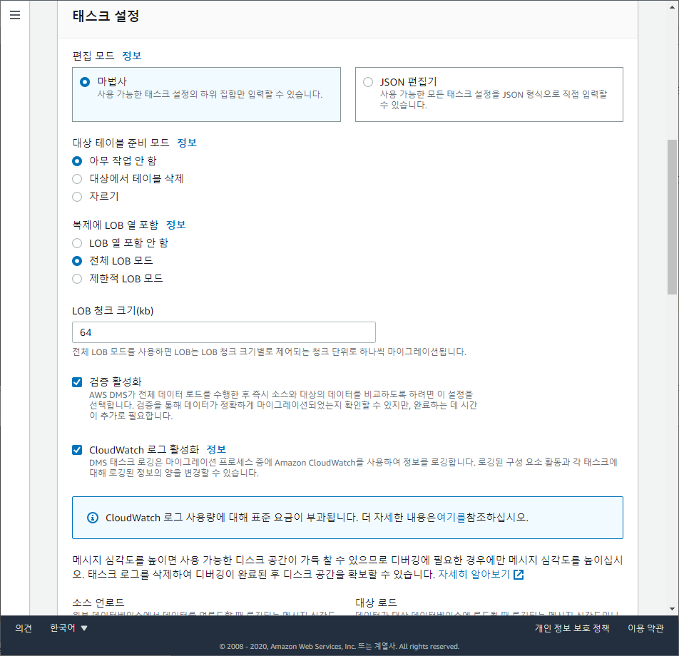
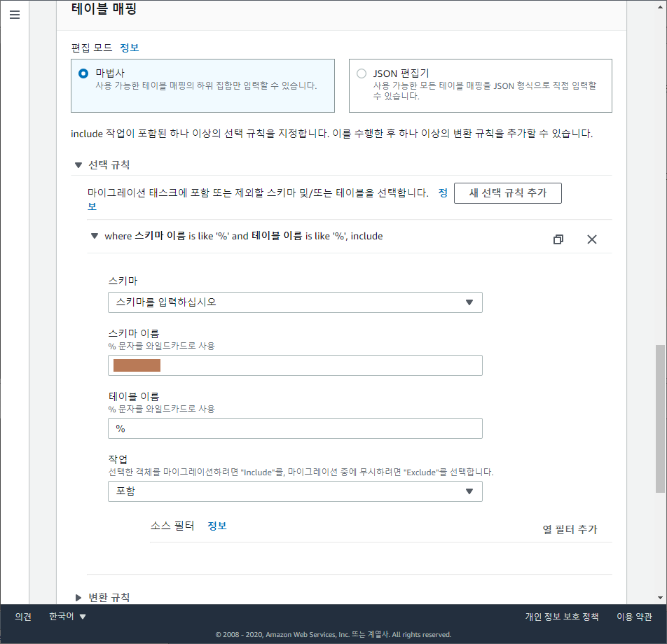
마이그레이션 해야할 스키마 갯수, 테이블 갯수에 따라 상황이 다르겠지만, 금번 프로젝트에서는 스키마 이름 단위로 태스크를 생성하여 마이그레이션을 진행했습니다. (테이블 이름은 % 로 그냥 둔채로)
스키마 갯수 대로 태스크를 생성해놓은 다음 태스크들을 일괄로 시작을 눌러줍니다.
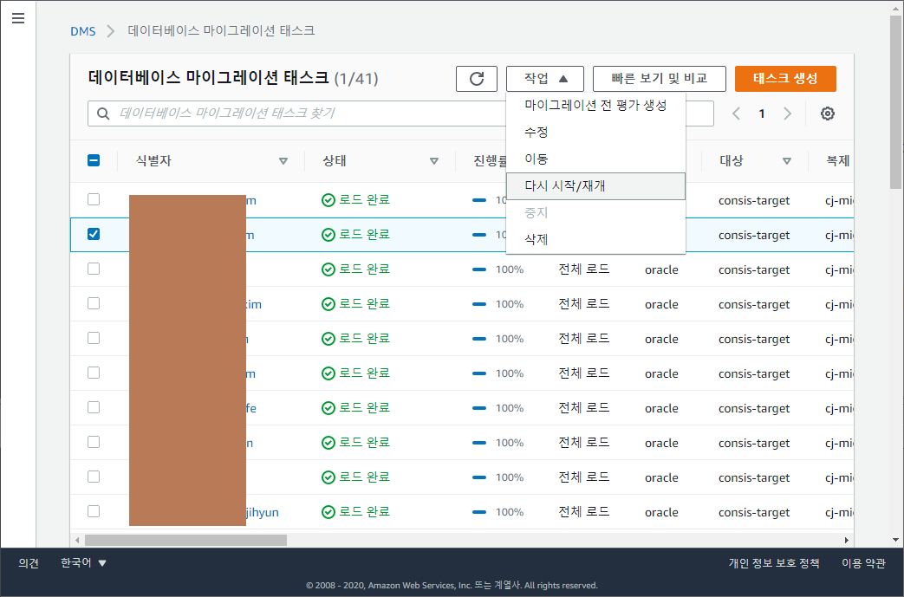
상태 값은 준비중, 로드중, 로드완료 등의 값들이 올 수 있으며, 아무 오류 없이 완료 되면 로드 완료로 바뀌게 됩니다. 이제 우리가 해야할 것은 오로지, Close your eyes and hope for the best 말고는 없습니다.
5. 마이그레이션 검증
데이터까지 마이그레이션이 완료된 후에는 소스, 타겟의 difference 가 존재하는지 검증해봐야 하며 검증 절차는 아래와 같이 구성하였습니다.
- 소스, 타겟의 테이블(뷰 포함) 갯수 비교
- 소스, 타겟의 테이블 당 row count 비교
- 소스, 타겟의 Index 갯수 비교
- 소스, 타겟의 Constraint 갯수 비교
위 절차들의 검증이 모두 끝나고 나면 비로소 DB 마이그레이션 작업이 완료됐다고 볼 수 있습니다. 아래 이미지는 Google sheet로 기록해놓았던 이관진행 문서입니다.
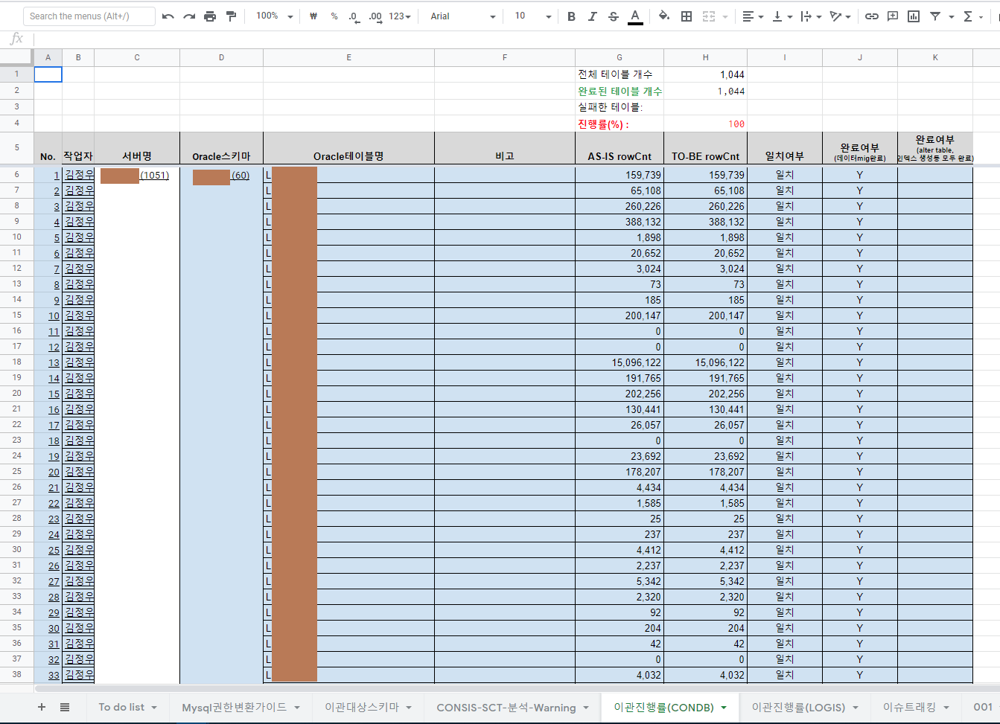
작업을 마치며
그동안 Youtube로만 접했던 AWS의 DMS, SCT를 직접 사용해보니 아주 약간의 버그성 동작과 모호한 UI 로 인해 작업 초반에는 생산성이 떨어졌던 것이 사실이나, 소스/타겟에서 지원하는 DB engine 종류가 매우 다양하며 특히 데이터를 일괄로 퍼서 넘기는 속도 등 성능이 뛰어나다고 봅니다.
(육아와 DB이관은 캐시템으로 해결하세요.)
향후에 실 서비스 상태의 DB를 마이그레이션 하게 되는 경우 추가로 고려해야 할 것들을 대략 정리해봤습니다.
- 다운타임 최소화
- 지속적인 변경 사항 복제 시 지연시간 최소화
- 실패 시 roll-back 방안
전통적인 DB 마이그레이션 작업은 일부 DBA, 일부 DB개발자 들만의 야간 작업으로 많이 치부되어오곤 했었습니다. 마이그레이션 진행 시 철야는 물론이었고, 스크립트 수작업하는 경우도 부지기수 였고, 경험 많은 DBA가 없으면 심각한 예외상황에 직면했을 경우 롤백하는 경우도 많았었지요.
AWS DMS의 경우 AWS콘솔에서 누구나 쉽게 이해하고 사용할 수 있도록 구성되어 있어서, 이제 앞으로의 DB 마이그레이션은 기성 DBA 들만의 작업이 아닐 수 있겠다는 생각이 들었네요.